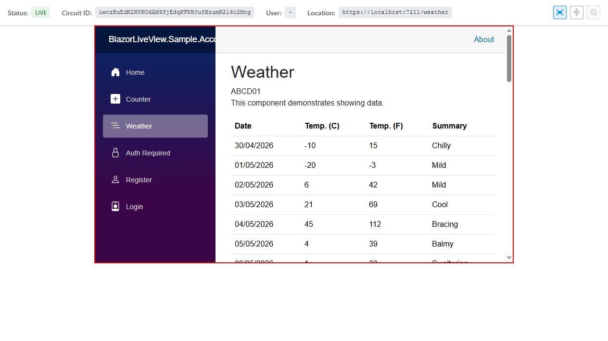
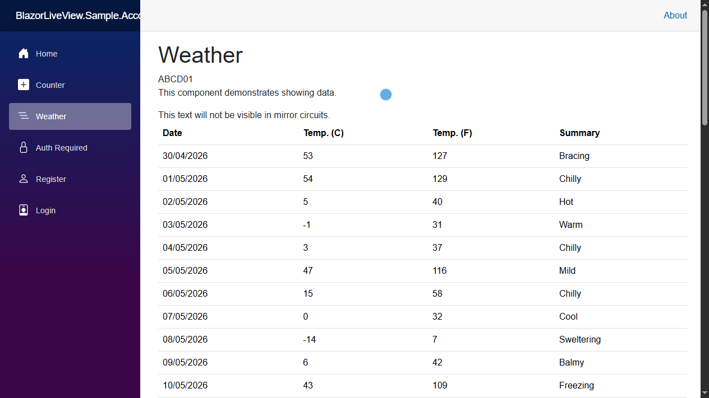

Utilities
These are the attributes and components used to control how your application behaves when being mirrored in BlazorLiveView.
Hiding Components in Mirror Views
When working with sensitive data (like personal information) you may want to hide them from being visible in the mirrored views.
Using the Component
For hiding specific parts of the UI, you can wrap the content in a LiveViewHideInMirror component. For example:
<div class="user-dashboard">
<h1>Welcome, @UserName</h1>
Email: @UserEmail
<LiveViewHideInMirror>
Social Security Number: @UserSSN
</LiveViewHideInMirror>
</div>
Using the Attribute
For hiding entire components from being mirrored on any page, you can apply the LiveViewHideInMirrorAttribute to the component class. For example:
@* TwoFactorAuthComponent.razor *@
@using BlazorLiveView.Core.Attributes;
@attribute [LiveViewHideInMirror]
Your authentication code is: @AuthCode
Remote Support Tools
There are three remote support tools available for administrators in the mirrored view like you can see in the screenshot below. These tools are:
- Window size sync: Keeps the window size of the mirrored view in sync with the user's actual window size.
- Scroll position sync: Keeps the scroll position of the mirrored view in sync with the user's actual scroll position. When this is active, the users cursor is shown to the administrator as a laser pointer.
- Laser pointer: Shows a laser pointer to the user so that the administrator can point at specific parts of the UI in a remote support scenario.

